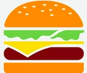

|  |
Kérd menüben! |
|
|---|---|---|
|
Menü választása esetén kapsz két szendvicset, amelyekből az egyik " A menühöz jár kétféle lónyál ( |
Gyermeknapi akció |
||
|---|---|---|
|
Gyermeknapi akciónk keretében különleges, színes, bohókás szendvicsek, gumicukor kiegészítők, és
finom gyümölcsös szörpök választhatók. Ikrek esetén csak az első menüt kell kifizetni, és apró ajándékokkal is kedveskedünk a kicsiknek. |
Heti akció |
||
|---|---|---|
|
E heti akciónk a "Fantasztikus" burger. Ínycsiklandó, látványos, óriási húspogácsával,
rengeteg
friss, roppanós zöldséggel. Jól átsütve, és tálalás előtt zsebsárkánnyal megpörkölve tálaljuk. |